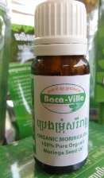

Organic Moringa Oil

Seed Oil is light oil that spreads and absorbs easily into the skin. Vitamins A, B, C, E, unsaturated fatty acids and palmitoleic, oleic and linoleic acids provide its great moisturizing and nourishing qualities. Seed Oil contains 1,700 antioxidants and is considered by experts to be one of the greatest cosmetic oils ever discovered. Due to its high concentration of antiseptic and anti-inflammatory properties, seed Oil helps diminish the appearance of fine lines and wrinkles and used to purify and heal the skin.
Tips: With high concentration of antiseptic and anti-inflammatory properties, use seed oil to help heal minor skin complaints. Great for psoriasis and eczema. Reduces the appearance of fine lines wrinkles, purifies the skin.
Historically, Moringa seed oil has been used for skin diseases, gout, joint pain, scurvy, inflammation, stomach distress, rheumatism, and many ills, while millions of people have used it for these ailments. This beauty oil is said to be the most stable oil on earth as it does not go rancid for up to 5 years. The exceptionally long shelf life of Moringa seed oil has been valued by the Egyptians insomuch that when they buried their dead, they would place a vase of Moringa seed oil in the tombs.